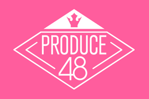

PRODUCE 101
home page
Description
Produce 101 is a multi-season South Korean reality-survival show produced by Mnet from which a girl/boy group is formed through the votes of the mass public. There are three types of votes involved in the show: online votes, onsite votes, and benefit votes. Online votes are the ones casted by the audience through Produce 101's app or website during the alloted voting period; meanwhile onsite votes are the votes of the live audience at the studio, after watching the trainees performance and are used to determine the results of the group, position, and concept evaluation. And lastly, benefit votes are the votes which the trainee/s who got the 1st place on the group, position, and concept evaluation receive. Each of the four seasons consist of 11-12 episodes and share a similar structure. The first and second episode being alloted for the company evaluations where trainees audition in groups based on their agencies/companies and are evaluated and sorted into classes A to F (with an additional X class in Produce X 101) by the mentors, A class being the most skilled trainees and closest to debut skill-wise, whereas F class are the trainees who have the most aspects to improve on. Episodes three to four for the re-evaluation to determine the trainees' positions for the "Pick Me" stage, which is the song's signal song and the start of the next evaluation, the group evaluation; where two groups compete by performing the same song (except for Produce X 101 where they performed two different songs of the same artist) to gain 1,000 benefit votes. The position evaluation, taking place in episodes six and seven, wherein the trainees will choose out of three positions: vocal, rap and dance (with an additional X position for Produce X 101); and prepare a performance with respect to their selected position, with the most voted trainee for each team gaining 5,000 benefit votes and the highest voted for each position gaining 100,000 benefit votes. The ninth episode broadcasting the concept evaluation wherein the trainees are assigned to perform an original song, each having a different concept with the trainees from the team with the highest cumulative votes each gaining 50,000 benefit votes. The fifth, eighth and tenth (for the first 2 seasons) or eleventh (for the last two seasons) episodes, which are yet to br mentioned, are alloted for the first, second and third ranking anouncements, respectively. And of course, the eleventh episode of the first two seasons and the twelft episode of the last two, are the final episode which is a live broadcast of the debut evaluation and the announcement of the final lineup.
Korean Franchises
|  | |||
| PRODUCE 101 Season 1 | PRODUCE 101 Season 2 | PRODUCE 48 (Season 3) | PRODUCE X 101 (Season 4) |
Production Team
 |
 |
|
| Ahn Joon Young | Kim Yong Bum | Lee Mi Kyung |
| producing director | chief producer | assistant producer |
Japanese and Chinese Franchises
The Produce series, although originated in South Korea; was also very popular amongst the international audience, specially in Japan and China. The two countries even creating their own versions of the series, Produce 101 Japan and Produce Camp, respectively. Produce 101 Japan only had one season, which premiered in September 2019 under the production company TBS and ended in December 11 of the same year, with a total of 12 episodes. Through this show, the 11-member boy group, JO1 was formed, debuting on March 4,2020 with the single, "PROTOSTAR." Unlike the groups from the South Korean version, however, JO1 had a permanent contract instead of a temporary one. On the other hand, Produce Camp, formerly known as Produce 101 China, just finished airing it's fourth season earlier this year, Produce Camp 2021, a sequel to Produce Camp 2019 and Produce Camp 2020. The first and third seasons of the show, was aimed towards creating a girl group, forming Rocket Girls 101 and BonBon Girls 303, respectively, with the former debuting with 11 members and the latter with 7 members. With the second and fourth season having the goal of forming a boy group, debuting the 11-member groups R1SE and INTO1 coming from season two and four respectively.
Produce Rigging Controversy
Shortly after the live broadcast of Produce X 101's last episode, Korean netizens noticed that all the final vote counts share a common denominator and pointed out a similar pattern found in the previous season's (Produce 48) results, which seemed to be highly unlikely to happen due to the show's large audience and the fact that people can only vote one trainee each. After discovering this information, the Korean netizens demanded an explanaition from Mnet which kickstarted the investigation of Mnet's vote rigging in the Produce series. On July 31, 2019 the police conducted a search and seizure in the offices of Produce X 101's staff, however failed to find any conclusive evidence. Thus, on August 12, 2019, the police conducted a second search and seizure in CJ ENM's offices, where they found a voice recording on a staff's phone with mentions of the vote manipulation the Produce X 101 staff allegedly did. As the investigation went on, Seoul Metropolitan Police's Cyber Investigation Unit proceeded to search the agencies which were suspected of being involved some of them being: Starship Entertainment, MBK Entertainment and Woollim Entertainment. Shortly after, on October 15, another South Korean broadcastin company, MBC aired the show "Pd Note" which contained statements of the trainees and staff about the vote manipulation.
The case held its first trial on February 7, 2020, where Ahn Joon Young and Kim Young Bum argued that the vote manipulation was due to some trainees who wanted to leave the show and denied all accusations of bribery. March 23, the second trial was held, and the two defendants revealed another reason for the vote manipulation, success, whilst continuing to deny any charges of bribery. On March 11 of the following year, the verdict was finally out, Ahn Joon Young was sentenced to two years in prison along with a fine of 37 million won, while Kim Yong Bum was sentenced to one year and eight months in prison.